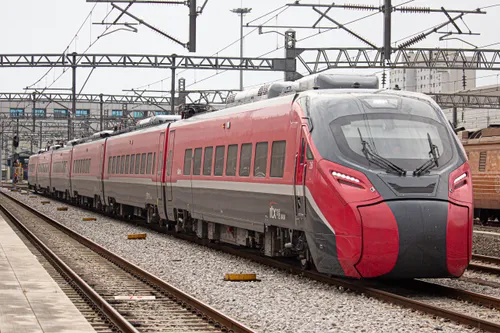
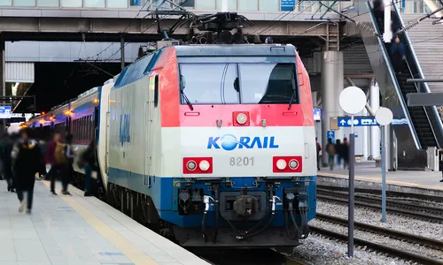

- 1. 개요
- 2. 역사
- 3. 특징
- 3.1. 3량 꼬꼬마 열차들의 집
- 3.2. 물류단지와의 동거
- 3.3. 일반선 공용과 다가오는 증량의 압박
- 4. 배속 및 취급 차량
- 5. 연계 교통
- 6. 여담
- 7. 관련 문서
1. 개요
"푸른 3량 열차들이 쉬어가는 강주시의 철도 허브"
덕빈북도 강주시 풍영동에 위치한 한국철도공사 소속의 차량사업소이다.
빈주권 광역철도 노선(강빈선, 빈효선 직결)에서 운행되는 한국철도공사 781000호대 전동차의 경·중정비 및 유치를 담당하는 핵심 차량기지다. 노선의 시발점인 풍영역 바로 북쪽에 거대하게 자리 잡고 있으며, 계성차량사업소와 함께 빈주광역철도 차량 관리의 양대 산맥을 이루고 있다. 여객열차뿐 아니라 화물열차와 기관차 등 다목적 업무를 수행한다.
2. 역사
- 2010년대 초반: 강빈선 복선 전철화 및 광역철도 운행 계획이 수립되면서, 강주시 풍영동 일대의 광활한 부지가 차량기지 입지로 선정되었다.
- 2016년 하반기: 현대로템과 우진산전에서 제작된 신형 781000호대 초도 편성들이 속속 반입되며 시운전 기지 역할을 수행했다.
- 2017년 5월 10일: 빈주광역철도 1단계(풍영역 ~ 빈주역) 구간 개통과 함께 정식으로 업무를 개시하였다.
3. 특징
3.1. 3량 꼬꼬마 열차들의 집
수도권 전철 1, 3, 4호선 등에서 흔히 볼 수 있는 코레일의 매머드급 차량기지(10량 기준)들과 달리, 이 곳에 소속된 광역전철 차량은 고작 3량 1편성인 781000호대 전동차뿐이다.
하지만 한국철도공사 특유의 미래지향적(?) 설계 철학 덕분에, 기지 내부의 유치선과 정비고 길이는 훗날 6량 증결을 대비하여 무식하게 길게 지어져 있다. 때문에 광활한 정비고 안에 3량짜리 파란색 열차가 덩그러니 놓여 있는 모습을 보면 묘한 귀여움과 이질감이 동시에 느껴진다. 코레일 차량기지 치고는 너무 휑하다.
3.2. 물류단지와의 동거
기지 동쪽으로는 강주물류단지가 거대하게 조성되어 있다. 본선인 강빈선은 여객뿐만 아니라 화물열차의 주요 운송로이기도 해서, 기지 내부 한편에는 화물열차용 기관차와 화차들이 쉴 수 있는 공간도 작게나마 마련되어 있다. 덕분에 기지 주변은 늘 대형 화물트럭과 전동차, 그리고 디젤기관차의 우렁찬 엔진 소리가 어우러지는 하모니(?)를 자랑한다.
3.3. 일반선 공용과 다가오는 증량의 압박
계성차량사업소에 비하면 부지가 넓어 사정이 훨씬 낫다지만, 이곳 역시 실상은 일반철도(ITX-마음, 무궁화호, 기관차, 화차 등) 유치 및 정비 역할을 겸하고 있는 공용 기지이다.
당장은 3량짜리 꼬꼬마 열차들이 굴러다녀서 공간이 남아돌아 보이지만, 다가오는 빈효선 광역전철과의 직결 통합 운행이 시작되고 폭발하는 수요를 감당하기 위해 완행열차가 4~6량으로 증결될 경우 이야기가 달라진다. 열차 대수 폭증과 편성 길이 연장이 한꺼번에 겹치면서 지금의 평화로운 여유 공간은 순식간에 포화 상태로 돌변할 가능성이 매우 높다.
3량짜리들이 뛰어놀던 넓은 운동장에 갑자기 6량짜리 덩치 큰 형아들이 단체로 밀고 들어오는 셈이다. "그래도 우린 계성보단 널널해~"라며 안도하던 풍영기지 관계자들도 점차 다가오는 직결 헬게이트와 증결 소식에 서서히 골머리를 앓고 있다 카더라.
4. 배속 및 취급 차량
빈주권 광역철도에 투입되는 781000호대 차량 중 절반가량이 이곳에 적을 두고 있으며, 그 외에도 각종 디젤·전기 기관차와 ITX-마음 여객열차 등이 다수 소속되어 활발히 운용되고 있다.
| 차량 사진 | 운행 노선 및 차종 | 편성 및 비고 |
|---|---|---|

|
■ 빈주권 광역철도 781000호대 전동차 |
|
|
 |
■ 일반철도 220000호대 (ITX-마음) |
|
|
 |
■ 기관차 및 객·화차 7400·7500호대 (디젤) 8200·8500호대 (전기) 등 |
|
5. 연계 교통
도보 15분 거리에 풍영역이 위치해 있다. 풍영역 정류장을 통해 강주시내 각지로 향하는 간선/지선 버스를 이용할 수 있다.
6. 여담
- 빛의 속도로 끝나는 세차: 기지 내에 설치된 자동 세차기 역시 장대열차(10량) 규격에 맞춰 길게 지어져 있는데, 3량짜리 781000호대가 쏙 들어가면 정말 눈 깜짝할 사이에 세차가 끝나버린다고 한다. 가성비 최강의 세차 시간. 세차 담당 직원들은 "차라리 손세차를 해도 금방 끝날 것 같다"며 농담을 하곤 한다.
- 시장 가는 날: 도보 거리에 매월 5일과 10일마다 장이 서는 풍영시장이 있다. 장날이 되면 점심시간에 기지 정비사들과 직원들이 삼삼오오 모여 시장으로 나가 뜨끈한 소머리국밥을 사 먹고 오는 것이 암묵적인 룰로 자리 잡았다.[1]
- 빈주광역철도 본선 문서에도 적혀있지만, 승강장 길이가 너무 길어 열차가 서면 승객들이 헐레벌떡 뛰어오는 "3량의 비애"를 가장 실감하는 사람들이 바로 이곳 소속 기관사들이다. 정차 위치를 맞추기 위해 유독 신경을 쓴다고 한다.